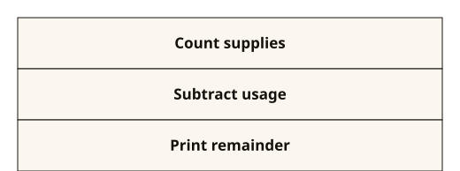
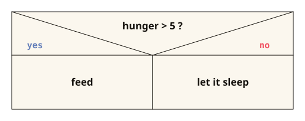
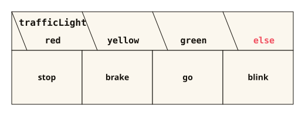

Chapter 6 of 11 · if, else, switch, logical operators
Conditionals
So far, your code ran line by line from top to bottom. Now it forks like a railroad junction: depending on the condition, one part or the other runs.
THE PROBLEM
It is 5 degrees outside. What does this program recommend?
Wetter.java
int temperature = 5;
System.out.println("Off to the outdoor pool!");Outdoor pool at 5 degrees? The program always says the same thing, no matter how cold it is.
Wetter.java
int temperature = 5;
if (temperature > 25) {
System.out.println("Off to the outdoor pool!");
} else {
System.out.println("Jacket on!");
}Now the program checks the temperature and picks a branch accordingly. This chapter shows how conditionals work.
After this chapter you can
- write conditionals with
if,else ifandelse - explain why Strings are compared with
equals()instead of== - combine conditions with
&&,||and!and set up their truth table - write a multi-way selection with
switchand-> - draw a sequence, a conditional and a multi-way selection as a structogram
6.1 Conditionals with if, else if and else
A program should act differently depending on the situation: outdoor pool or hoodie, entry or quarantine. if checks a condition and then picks exactly one path.
STRUCTURE · CLICK A PART
if (condition) {
statements if the condition is true
} else if (other condition) {
statements if this one is true
} else {
statements for all other cases
}else if and else are optional. The condition always evaluates to true or false, usually through a comparison: > < >= <=, == (equal?) and != (not equal?).
if starts the conditional: first the condition in parentheses, then the block. No semicolon belongs after the closing parenthesis: with if (temperature > 25); the if already ends at the semicolon, and the block below always runs.temperature > 25. A boolean variable is enough on its own: if (vaccinated). For equality you use ==, because if (age = 18) is an assignment, and the compiler reports it as an error.} else, the brace closes the block before it, then the next branch begins. Without braces, only the first statement belongs to the branch, even if the second one is indented the same way.;, e.g. System.out.println("Outdoor pool!");. A branch can contain any number of statements, including another if.else if checks another condition, but only if all the conditions before it were false. You can have as many of these as you like, and the order matters: if temperature > 10 comes before temperature > 25, the branch for over 25 degrees never gets its turn.else has no condition. Its block runs if no condition before it was true, which is why it always comes last. Without else, no branch runs in that case.Wetter.java (excerpt)
if (temperature > 25) {
System.out.println("Outdoor pool!");
} else if (temperature > 10) {
System.out.println("So-so. Jacket optional.");
} else {
System.out.println("Hoodie on, tea on.");
}LINE BY LINE
if (temperature > 25) | checks the comparison. If it is true, the block below runs, and all the other branches are skipped. |
{ … } | the block: everything between the curly braces belongs to this branch. |
else if (temperature > 10) | is only checked if everything before it was false. So it is already settled here: at most 25 degrees. |
else | the rest: runs if no condition matched, and therefore needs none. |
You first, then Java
What does the code print at exactly 25 degrees, and what at exactly 10 degrees? Jot down your guess before you move the slider.
At 25 degrees you get “So-so. Jacket optional.”, since 25 > 25 is false and 25 > 10 is true. At 10 degrees you get “Hoodie on, tea on.”, because 10 > 10 is false as well. At the boundaries, it matters whether > or >= is used.
Remember this
Exactly one branch always runs: the first one whose condition is true.
=stores a value in a variable (assignment),==checks whether two values are equal (comparison).if (age = 18)→ compiler error.if (age == 18)→ correct.
Exercise 6.1.1: Which branch runs?
For each temperature, enter which branch of the code above runs: if, else if or else.
Which branch?
temperatur Zweig
30
26
18
11
0
-3 Level-up: Short form: the ternary operatoroptional
If you only pick one value, five lines of if/else are overkill. The short form fits on one line.
STRUCTURE · CLICK A PART
condition ? value if true : value if falseThe result is a value. It goes to the right of the = or wherever a value is needed.
boolean, e.g. hunger > 5. It is evaluated first and decides which of the two values is the result.true, e.g. "feed". This is a value, not a statement: System.out.println(…) does not belong here.if without else, the ternary operator always needs both values.false, e.g. "keep sleeping". Both values must match the type of the variable to the left of the =, so for String message two Strings.Five lines that could be one
String message;
if (hunger > 5) {
message = "feed";
} else {
message = "keep sleeping";
}Shorthand.java
public class Shorthand {
public static void main(String[] args) {
int hunger = 7;
String message = hunger > 5 ? "feed" : "keep sleeping";
System.out.println(message);
}
}LINE BY LINE
hunger > 5 | the question: Is hunger greater than 5? |
? "feed" | After the question mark comes the value for true. |
: "keep sleeping" | The colon separates the answers, and the value for false follows it. |
Remember this
The ternary operator returns a value. It does not replace an if with several statements. And don't nest it.
6.2 Comparing Strings with equals()
Often the decision depends on an input: Did someone type “yes”? == compares numbers, Strings are compared with equals.
STRUCTURE · CLICK A PART
text.equals("comparison text")
text.equalsIgnoreCase("comparison text")Both return true or false and thus fit directly into an if. The second form ignores upper and lower case.
answer. If it comes from the keyboard, first remove the spaces at the edges with trim(), because " yes".equals("yes") gives false.equals compares the content of two Strings character by character, including upper and lower case: "Yes".equals("yes") gives false. For Strings you never use ==, because it does not compare the content.equalsIgnoreCase: “ignore case” means that upper and lower case are ignored. "YES".equalsIgnoreCase("yes") gives true. Spaces still count, though: " yes" and "yes" remain different."yes". Instead of a fixed text, a String variable also works, then without quotes: expectedAnswer.equals(answer).Admission.java
import java.util.Scanner;
public class Admission {
public static void main(String[] args) {
Scanner keyboard = new Scanner(System.in);
System.out.println("Are you vaccinated? (yes/no)");
String answer = keyboard.nextLine().trim().toLowerCase();
if (answer.equals("yes")) {
System.out.println("Welcome to the camp.");
} else {
System.out.println("Quarantine first.");
}
}
}LINE BY LINE
keyboard.nextLine() | reads the line as it was typed, spaces included. |
.trim().toLowerCase() | prepares it with the String methods from Chapter 5: spaces at the edges removed, everything lowercase. “ YES ” becomes “yes”. |
answer.equals("yes") | compares the content: true if exactly “yes” is in it. |
else | everything else, including “no”, “jo” or an empty String. |
Remember this
Strings are never compared with ==: for Strings it does not check the content and often returns false for identical texts (the why: Chapter 9). Iron rule: numbers → ==, Strings → .equals().
Exercise 6.2.1: Five comparisons, one yes
“ Yes ” was typed, with one space before and after it. That is exactly what input contains. What does each line give: true or false?
Five comparisons
| Comparison | Result |
|---|---|
input.equals("Yes") |
|
input.trim().equals("Yes") |
|
input.trim().equals("yes") |
|
input.trim().equalsIgnoreCase("yes") |
|
input.trim() == "Yes" |
6.3 Logical operators: &&, || and !
One condition is rarely enough: only someone who is of age and has a ticket may get in. For that, you combine conditions with exactly three symbols.
STRUCTURE · CLICK A PART
condition && condition AND: both must be true
condition || condition OR: one is enough, two bars
!condition NOT: flips true and falseA truth table describes this completely. With two conditions it has exactly four rows, there are no more cases.
boolean on its own, such as a comparison like age >= 18 or a variable like hasTicket. That is why the variable has to appear on both sides: the compiler reports age >= 18 && < 65 as an error, the correct form is age >= 18 && age < 65.&& (AND) gives true only if both sides are true, e.g. with age >= 18 && hasTicket. If the left side is already false, the right side is not evaluated at all: this is called short-circuit evaluation.|| (OR) gives true as soon as at least one side is true, even if both are. If && and || appear in one condition, && is evaluated first. Parentheses make the order unambiguous.! (NOT) goes directly in front of a condition: !bitten is true if bitten has the value false. It binds the strongest, so !a && b means (!a) && b. If it should apply to a whole expression, use parentheses: !(a && b).| A | B | A && B | A || B |
|---|---|---|---|
| false | false | false | false |
| false | true | false | true |
| true | false | false | true |
| true | true | true | true |
| A | !A |
|---|---|
| false | true |
| true | false |
Remember this
The OR in Java is an inclusive or.
- In everyday language: “coffee or tea?” usually means one of the two, not both.
||returnstrueas soon as at least one side is true, even if both are.- The last row of the OR column (both true) comes up in exams.
Kurzschluss.java (excerpt)
if (name != null && name.equals("Mia")) {
System.out.println("Hello Mia.");
}LINE BY LINE
name != null | first checks whether there is any text in name at all. |
&& | If the left side is false, the result is already settled, and the right side is not evaluated at all. This is called short-circuit evaluation. The same goes for ||: if the left side is already true, the result is settled. |
name.equals("Mia") | therefore only runs if name contains a text. In the reverse order, there would be a NullPointerException. |
You first, then Java
What does age > 12 || age < 5 && hasCompanion give for age = 15 and hasCompanion = false? Jot down your guess before you read on, and pay attention to what is evaluated first.
Precedence: ! binds the strongest, then &&, then ||. So the example above means age > 12 || (age < 5 && hasCompanion), and thus true || (false && false), which is true. Calculated from left to right, the result would be false. If in doubt, use parentheses. Experienced people use them anyway.
Exercise 6.3.2: The truth table on your own
Click the result in each cell: true or false. The last column is new: != asks whether the two are different. In exactly one row it differs from ||: that is the exclusive or of everyday language.
Truth table: fill in
| A | B | A && B | A || B | A != B |
|---|---|---|---|---|
| false | false | |||
| false | true | |||
| true | false | |||
| true | true |
| A | !A |
|---|---|
| false | |
| true |
Exercise 6.3.3: From code to table
At the gate of the camp, this condition is in place. Set up its truth table: first the helper column !bitten, then the result.
Tor.java (excerpt)
if (!bitten || vaccinated) {
System.out.println("Welcome to the camp.");
}Who gets in?
| bitten | vaccinated | !bitten | Result |
|---|---|---|---|
| false | false | ||
| false | true | ||
| true | false | ||
| true | true |
And now the matching sentence
In words: Whoever has not been bitten or is vaccinated may get in. The last row is the interesting one: bitten and vaccinated gives true. Not a mistake in the table, but a decision in the code. Is that wise at the camp gate? A truth table settles such questions before the program runs.
Exercise 6.3.4: From language to code
The rule for the night watch is: Whoever is rested and not injured may. The watch chief always may. Write the condition and set up the table: three variables, eight rows.
Nachtwache.java: the condition
if () { … }May keep watch?
| rested | injured | boss | may keep watch? |
|---|---|---|---|
| false | false | false | |
| false | false | true | |
| false | true | false | |
| false | true | true | |
| true | false | false | |
| true | false | true | |
| true | true | false | |
| true | true | true |
Level-up: Negating a condition correctlyoptional
You want the opposite of a condition? Just putting a ! in front of everything goes wrong. The following holds:
Two equations that always hold
!(a && b) is the same as !a || !b
!(a || b) is the same as !a && !bWhen negating, the operator changes too: AND becomes OR and vice versa. Check it against the table from Exercise 6.3.2. These are De Morgan's laws, popular in exams.
6.4 Multi-way selection with switch
If you check a variable against many fixed values, an else if chain becomes long and hard to follow. switch assigns each value its own case. For ranges like “greater than 25”, you stick with if.
STRUCTURE · CLICK A PART
switch (variable) {
case value -> statement;
case value, value -> statement;
default -> statement for all other values;
}switch only checks for equality, with int, char, String and enum; long, double and boolean do not work. If a case needs several statements, they go in curly braces: default -> { … }.
switch starts the multi-way selection: in parentheses what is checked, then the cases in curly braces. The case whose value matches runs, otherwise default.zone or grade. Instead of a variable, an expression like input.trim() also works.case starts a case. If the value of the variable matches one of the values after it, this case runs. Several values for the same case are separated by a comma: case 6, 7 ->.case "North" for a String, case 3 for an int. Ranges like > 25 do not work here, and each value may appear in only one case.-> separates the case from what happens then. You type it as a minus sign and a greater-than sign, with no space between them. After the case, the switch is over, a break is not needed.default is the case for all values that appear in no case, and it usually goes at the end. If it is missing and no case matches, no statement of the switch runs.; at the end, e.g. System.out.println("Bunker A");.The same thing twice
// with else if, works but is tedious to read
if (zone.equals("North")) {
System.out.println("Bunker A");
} else if (zone.equals("South")) {
System.out.println("Bunker B");
} else {
System.out.println("Zone unknown.");
}
// with switch, same logic, easier to read
switch (zone) {
case "North" -> System.out.println("Bunker A");
case "South" -> System.out.println("Bunker B");
default -> System.out.println("Zone unknown.");
}LINE BY LINE
switch (zone) | evaluates zone once. |
case "North" -> | If the value matches, exactly what is to the right of the arrow runs. After that, the switch is over. |
default -> | the case “nothing matched”. Optional, but almost always sensible. |
Remember this
switchchecks a variable against fixed values,case 6, 7 ->combines cases.- Exactly one case always runs. The arrow form does not need a
break.
Level-up: switch that returns a valueoptional
Often you do not want to print anything, but just select a value. Then the whole switch can go to the right of the =:
BunkerPlan.java
public class BunkerPlan {
public static void main(String[] args) {
String zone = "South";
String bunker = switch (zone) {
case "North" -> "Bunker A";
case "South" -> "Bunker B";
default -> "unknown";
};
System.out.println("Zone " + zone + ": " + bunker);
}
}You first, then Java
At the very end there is }; instead of just }. Why is that? Jot down your guess before you read on.
The line is an assignment, and like every statement it ends with a semicolon. Here the switch is not a block but the value on the right-hand side. Because it must always return a value, every possible value needs a case. For numbers and Strings, that means: default is required.
Level-up: The old form with colon and breakoptional
Before Java 14, the arrow did not exist yet. That is why you will come across this form in old code and in some exam tasks:
The old form
switch (zone) {
case "North":
System.out.println("Bunker A");
break;
default:
System.out.println("Zone unknown.");
}Colon instead of arrow, and each case ends itself with break;. If a break is missing, the program continues, without a new check, into the next case and prints more than intended. This is called fall-through and was the most common switch trap for years. You should be able to read this form, you do not have to write it: with -> this mistake cannot happen in the first place.
6.5 Structograms according to DIN 66261
Before typing, professionals plan the flow in a language-independent way. The most common tool is the structogram according to DIN 66261: nested rectangles, read from top to bottom. The shape reveals the structure before you even read the text.
Sequence: one after the other

Conditional: if/else

Multi-way selection: the switch in the diagram

default, so it may also be missing.LINE BY LINE
if (hunger > 5) | the split head: the condition on top, two diagonals below it. |
{ feed } | the left field under “yes”. |
else { keep sleeping } | the right field under “no”. Without else it stays empty: then nothing happens. |
switch (trafficLight) | the fanned-out head: one field per case, on the right the else case for default. |
Remember this
Structograms have no arrows and no jumps.
- What is stacked on top of each other runs one after the other.
- What is side by side are alternatives.
Level-up: Structogram or flowchart?optional
The second notation is the flowchart (PAP, DIN 66001): boxes and diamonds, connected with arrows. Both describe the same thing, the difference is pedagogical:
- In a flowchart you can draw arrows anywhere, even across and backwards.
- In a structogram, boxes sit inside each other instead of being connected. Spaghetti code simply cannot be drawn with it. Not a shortcoming, but the point.
That's enough for now
if/elseis a conditional: condition in parentheses (true or false), exactly one branch runs.=assigns,==compares numbers,.equals()compares Strings.- Build conditions from comparisons and
&&,||,!. Precedence:!before&&before||, when in doubt use parentheses. switchchecks a variable against fixed values. With->exactly one case runs.- In a structogram, the shape reveals the structure.
Checkpoint
What is wrong with if (points = 100)?
= assigns the value 100 to points, == checks whether the value is 100. Here the compiler reports an error, but not with a boolean variable.
Two Strings both contain the text "yes". What does == return?
Hence the iron rule: numbers with ==, Strings with equals().
What happens after case "North" -> System.out.println("Bunker A");?
With the arrow, exactly one case always runs. You only need the old break to read other people's code.
How can you recognize a conditional in a structogram?
The shape carries the meaning: triangle head = conditional, fan = multi-way selection, L frame = loop.